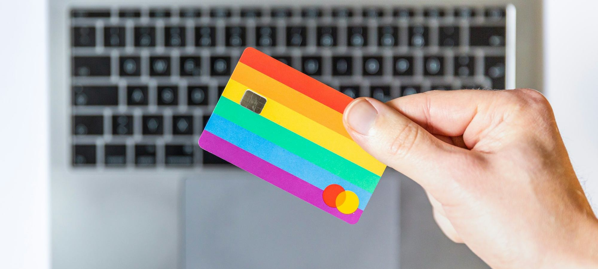

Quelle banque ouvre un compte sans condition de revenus en 2026 ?
Neuf comptes ouverts aux personnes sans revenus fixes, de la néobanque gratuite à l'offre clientèle fragile, passés au crible des mêmes quatre critères pondérés.

Banques en ligne, néobanques, comptes de paiement. Nous comparons ce qu'il faut pour ouvrir le compte, ce qu'il coûte vraiment sur un an et ce qu'il permet au quotidien.

Neuf comptes ouverts aux personnes sans revenus fixes, de la néobanque gratuite à l'offre clientèle fragile, passés au crible des mêmes quatre critères pondérés.


Neuf comptes ouverts aux personnes sans revenus fixes, de la néobanque gratuite à l'offre clientèle fragile, passés au crible des mêmes quatre critères pondérés.
Vous hésitez entre un compte retiré chez le buraliste et une néobanque qui tient dans un téléphone ? Nous avons mis face à face les 7 offres de Nickel et de N26, de 0 € à 16,90 € par mois, sur quatre critères pondérés.
Huit comptes ouverts sans passer par un conseiller, classés d'abord sur la vitesse et la simplicité du parcours, puis sur l'accès, le prix et les services.
Plus de 67 € par an.
Dix comptes professionnels comparés, du compte gratuit de néobanque à la formule de banque de réseau qui dépasse 100 € par an.

Vous venez de passer la barre des 10 000 € de chiffre d'affaires, ou vous voulez simplement séparer vos recettes de vos courses.
Note globale sur 10, relevé de démonstration. L'accessibilité (revenus, domicile, situation bancaire) et l'ouverture comptent plus que le prix, presque tous les comptes d'entrée de gamme étant à 0 €.
Voir la méthode de notation


Comparez deux comptes sur nos cinq critères en un clic.
Nickel, Hello bank! (Hello One), Fortuneo (Fosfo), N26, Revolut et BoursoBank (Ultim) ne demandent pas de revenus minimum. Nickel est le seul de cette liste à ne demander ni justificatif de domicile ni situation bancaire saine.
Les comptes gratuits sous condition d'usage, BoursoBank Ultim, Hello One, Fortuneo Fosfo, N26 et Revolut Standard, restent moins chers que Nickel à 25 € par an. La moyenne des frais fixes en banque de réseau dépasse 67 € par an selon l'Observatoire des tarifs bancaires 2026.
Oui chez Nickel, qui demande une pièce d'identité et un numéro de téléphone. La plupart des banques en ligne demandent un justificatif de domicile de moins de trois mois.
Cinq critères notés sur 10, accessibilité, prix, ouverture, services et note globale pondérée, en relevé de démonstration. Les tarifs viennent des plaquettes et des pages officielles.
Non, un établissement de paiement comme Nickel ou Qonto tient des comptes de paiement, avec IBAN et carte, mais ne fait ni crédit ni découvert. Les fonds sont cantonnés et protégés.
Un email par semaine, le classement du mois, les nouveaux comparatifs et les hausses de tarifs bancaires repérées dans les plaquettes.
Pas de publicité, désinscription en un clic.